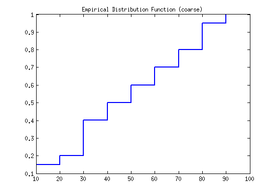

Lab7. Empirical distribution function, and statistics (Due Apr. 10, 09:00 AM, 2015)
Shanshan Zhang, tuf14438@temple.edu Learn to plot a histogram according to the definition in the textbook.
Contents
Empirical distribution example
First calculate the height of histograms for a sample with discrete numbers: [12, 15, 34, 24, 35, 67, 89, 13, 45, 36, 89, 46, 97, 34, 56, 78, 65, 83, 59, 74]
X = [12, 15, 34, 24, 35, 67, 89, 13, 45, 36, 89, 46, 97, 34, 56, 78, 65, 83, 59, 74]; N = length(X); bin1 = 10:10:100; width1 = ones(1,10)*10; % Define the width bincount1 = histc(X,bin1); % Calculate the count of numbers falling in each bin. height1 = bincount1./(N*width1); % Calculate the height of each bin. PBi = height1 .* width1; Fnt = cumsum(PBi); stairs(bin1, Fnt, 'LineWidth', 2) title('Empirical Distribution Function (coarse)')
Statistics that describes the data
Calculate the following numeric summaries for climate ratings in city data.
3.1) Compute the sample median, sample mean, sample standard deviation, sample MAD.
clear all; load cities X = ratings(:,1); [N,~] = size(X); sMe = median(X); % Sample median sMea = sum(X)/N; % Sample mean sVar1 = 1/N * sum((X - sMea).^2); sSTD = sqrt(sVar1); sMad = median(abs(X - median(X)) );
3.2) Compute the lower quantile, upper quantile and the IQR. lower quantile: quantile(X, 0.25)
X = sort(X); N = length(X); p =0.25; k = floor(p*(N+1)); alpha = p*(N+1)-k; lowQ = X(k) + alpha*(X(k+1) - X(k)); % upper quantile: quantile(X, 0.75) p = 0.75; k = floor(p*(N+1)); alpha = p*(N+1)-k; upperQ = X(k) + alpha*(X(k+1) - X(k)); % IOR IOR = upperQ - lowQ;
Assignment
Question. Choose 3 columns from cities data, sumarize each column by calculating the statics: sample median, sample mean, sample std, MAD, upper and lower quantile, IQR. Put all your script and results in a word document.